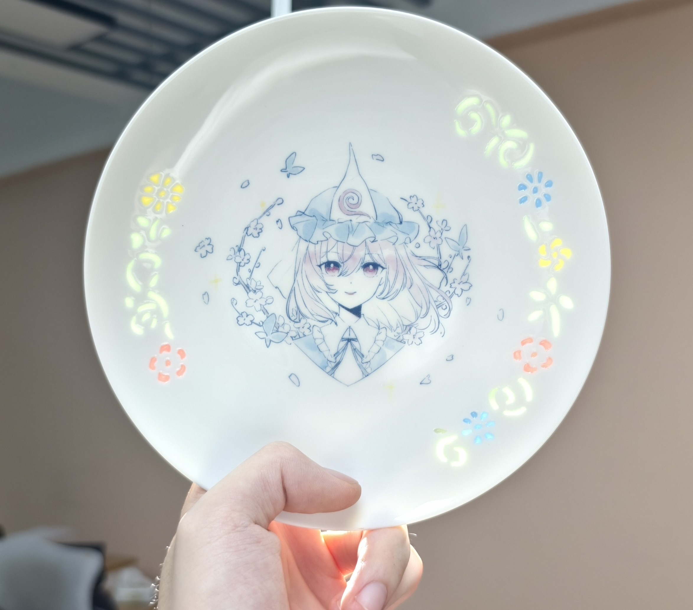

窃月瓷坊の代表的な工芸と作品をご紹介します。

西行寺幽々子をモチーフに制作した玲瓏磁小皿です。 普段はシンプルな白磁ですが、光を透かすと周囲の花模様がふわりと現れます。 幽々子様の持つ優雅さと幻想的な雰囲気を表現できるよう仕上げました。 個人的には、昼間の自然光で見る姿が特にお気に入りです

青花磁器の魅力は、シンプルだからこそ際立つ美しさ。 何百年も受け継がれてきた景徳鎮の伝統技法と、 大好きなキャラクターたち。 一見遠い存在に見える二つを組み合わせたら、 ちょっと面白い作品が生まれました。